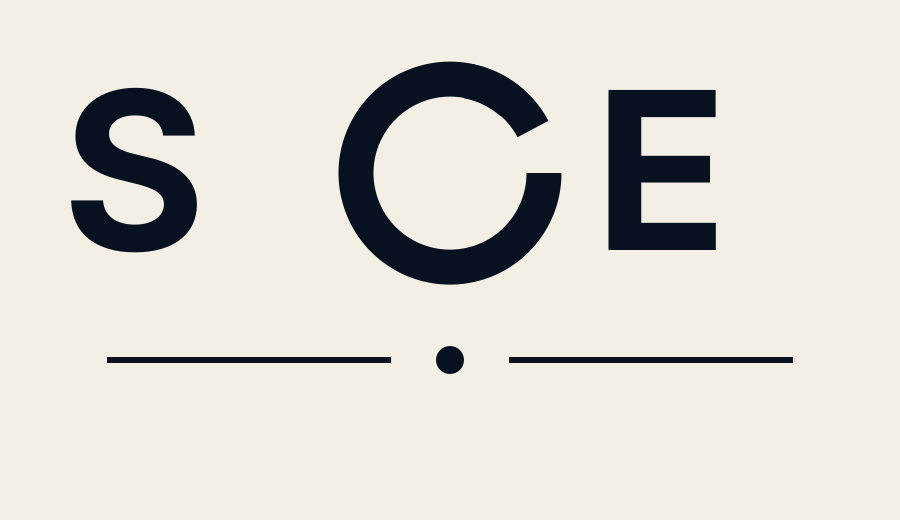
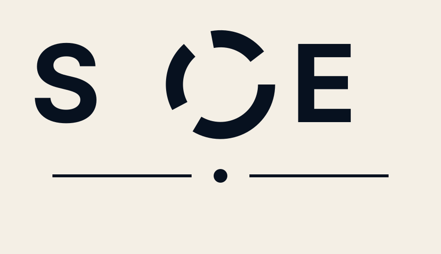
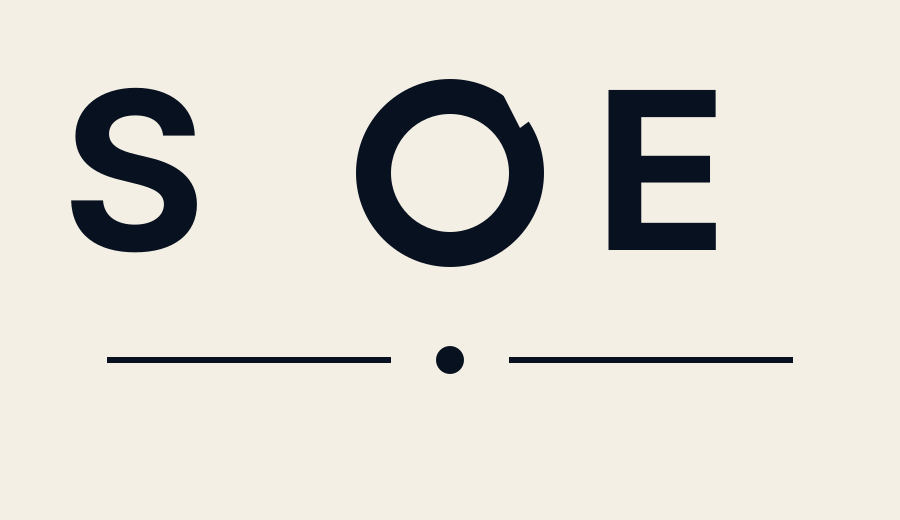

SOE Logo: Patched O Directions
Small geometry tests responding to the reticle/loading-spinner critique. These do not alter the live website.



Small geometry tests responding to the reticle/loading-spinner critique. These do not alter the live website.


